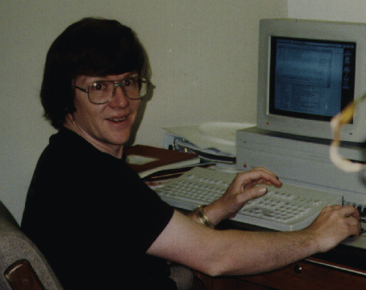

http://www.werewolf.net/~hljmm/
hljmm@werewolf.net
I work as an integrated circuit process engineer. My current area is front
end etch. I began working at Cray Research in 1986 as an IC process
technician in the back end etch area. Over the past ten years I have worked
in metal etch, via etch, map & probe, test, failure analysis,
photolithography, front-end thin films, ion implant, back-end thin films and
front end etch.
One of my specialties is statistical design of experiments. I am also
interested in statistical process control, TRIZ, production simulation and
total quality programs. I am not fanatical about any of these methods but if
I find something in them that works for me I will use it. The most useful
experimental design for me has been either the four run/three variable
fractional factorial or the four run/two variable full factorial. Iterations
of these two designs are very effecient for my applications.
I am married to a wonderful woman Laurie and I am kept busy by my two
teenage stepdaughters, Jacqueline and Megan, and my two year old son,
Matthew. My hobbies include music, art, science and computers.
I play several instruments including (in order of ability...best to worst)
Harmonica, Acoustic Bass, Synthesizers, Guitar, Recorder and Theremin.